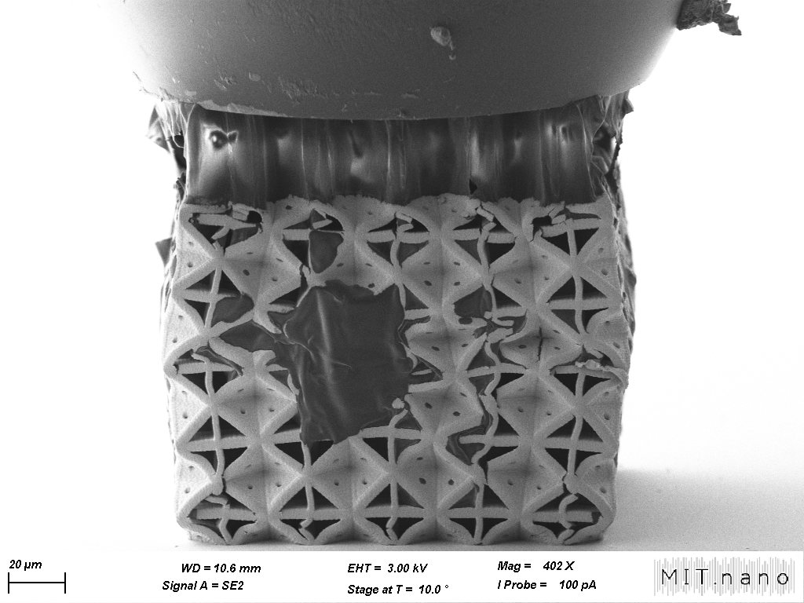

Unit Cell Tessellation

Design methodology
Architected material design
Finite element analysis
Nanomechanical testing
Course2.002: Mechanics & Materials II
TimelineSpring 2026
TeamChristian Tavera (MIT '27), Edison Peguero Rosario (MIT '27), Stasya Selizhuk (MIT '28)
Tools
SOLIDWORKS (CAD and FEA)
Two-photon lithography (MIT.nano)
Scanning electron microscope (SEM)
In-situ nanoindenter
Won class competition for highest stiffness design
For 2.002: Mechanics & Materials II, my lab group and I designed a polymer mechanical metamaterial unit cell to maximize stiffness, then fabricated a 2×2×2 tessellation via two-photon lithography at MIT.nano. We compressed the ~150 μm sample with a nanoindenter inside an SEM, recording load-displacement data while watching it deform in real time. The design reached about 3.6× the normalized stiffness of a reference architecture, and our FEA predicted its stiffness within 2.2%.
Context/Motivation
This project was the architected-materials lab in 2.002: Mechanics & Materials II. The goal was to understand how unit-cell geometry affects a material's effective stiffness, strength, and toughness — relative to both the base resin and a reference architecture, the tetrakaidecahedron.
Problem Framing
We designed our unit cell to maximize stiffness. Working at this scale meant designing for two-photon lithography, with a sample about 146 μm tall on a 168 μm square footprint, printed from a photosensitive resin (Eₛ = 1,713 MPa, σᵧₛ = 22.1 MPa). Our benchmark was the tetrakaidecahedron, a common reference architecture.
Process
Designing for stiffness
We aimed the geometry at stiffness in two ways: a higher fill fraction, and struts arranged to place more material along the primary load-bearing direction. Both showed up in the results — the design's normalized stiffness was about 3.6× the reference's.
Validating with FEA
We modeled the full 2×2×2 tessellation in SOLIDWORKS, which predicted an effective modulus of 370.5 MPa. Experiment measured 362.5 MPa — a 2.2% discrepancy, giving us confidence that the model captured the geometry's behavior.
Testing in situ
We first characterized the printed sample's dimensions by SEM, then compressed it with a nanoindenter mounted inside the SEM, so we could record load-displacement data and watch the deformation at the same time. We converted the raw data to engineering stress and strain to extract stiffness, yield strength, and toughness.
Room for Improvement
Under compression, the metamaterial collapsed suddenly and catastrophically — consistent with stress concentrations at the beam junctions driving failure, followed by strain softening once its strain-hardening capacity was exhausted. In a next iteration, we would increase the fillet radii at the nodes to reduce those concentrations and delay the onset of failure.
Outcome
- Effective modulus E* = 362.5 MPa; FEA predicted 370.5 MPa (2.2% discrepancy)
- Normalized stiffness 0.212 vs. 0.059 for the reference tetrakaidecahedron (~3.6×)
- Normalized strength 0.629 vs. 0.115 (~5.5×)
- Toughness 6.47 MJ/m³ vs. 0.332 MJ/m³ (~20×), owing to an extended post-yield plateau
Reflection
[NEEDS INPUT]